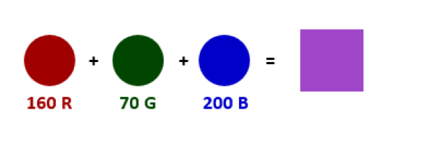
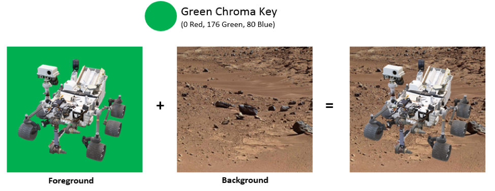
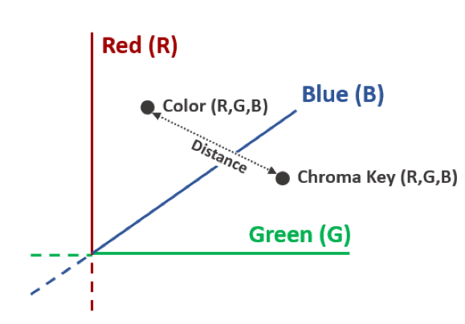
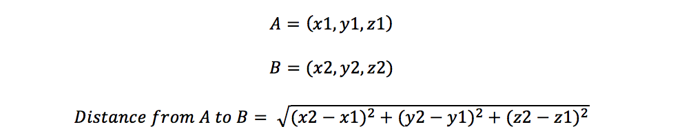

Problem made by Lockheed Martin, is CodeQuest 2018 Problem 11
This problem has a difficulty of 50.
In computer graphics, images on your screen are made up of small dots called pixels. Each of these pixels gets its color as a combination of primary colors such as Red + Green + Blue (RGB) or Cyan + Magenta + Yellow + Black (CMYK).

One common post-processing effect, used throughout the entire video industry from movies to weather, YouTube videos, live streams and more, is the application of a Chroma Key. Commonly called color keying or green screen effects, this process allows the video producer to replace part of a live video feed with an image from another video source using a colored background as a mask.

The image on the left has a green background, and the terrain is brown. The terrain replaces the green.
You’ve been tasked with writing software to implement chroma keying. Your application will be given the color of the chroma key (all colors are provided in RGB with values ranging from 0 to 255 [inclusive]) and a tolerance level for how "close" a color needs to be to the chroma key to be replaced. Your application will be responsible for either returning the pixel color of the foreground or the pixel color of the background depending upon the chroma key and tolerance values.
When determining whether the color is "close" enough to the chroma key, it can be helpful to consider the RGB values in a cartesian coordinate system, much like a point (x, y, z) in 3D space. If the distance between two points in this RGB space is less than or equal to the tolerance, than the colors are considered "close" and the color should be replaced by the background color.

Hint – The formula for the distance between two points will be helpful here!

The first line of the file Prob11.in.txt will contain a positive integer T denoting the number of test cases that follow. Each test case will have the following input:
• A single line containing 10 integers separated by spaces in the format:
Cr Cg Cb T Fr Fg Fb Br Bg Bb
Notes:
• Cr, Cg, Cb are the Red, Green and Blue values of the chroma key
• T is the tolerance of the chroma key
• Fr, Fg, Fb are the Red, Green and Blue values of the foreground pixel
• Br, Bg, Bb are the Red, Green and Blue values of the background pixel
Please Note – All values are integers ranging from 0 to 255 (inclusive)
3
0 176 80 30 12 184 90 132 101 76
0 176 80 10 12 184 90 132 101 76
0 176 80 30 100 95 93 147 113 87
For each test case, your program should output one line which contains three integers representing the Red, Green & Blue components of the resulting pixel.
Or Og Ob
Where Or, Og, Ob are the Red, Green and Blue values of the pixel result.
132 101 76
12 184 90